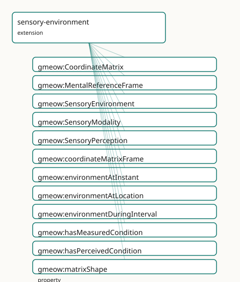

GMEOW Sensory Environment Module
- IRI: https://blackcatinformatics.ca/gmeow/slices/sensory-environment
- Tier: extension
Group: extensions
What This Slice Covers
This slice owns 32 terms and contributes 9 mapping or projection rows. Use it when its terms match the native fact you want to preserve; use the linkage tables to see how those facts leave GMEOW for consumer vocabularies.
Dependencies
Consumers
- Environmental sensing context for sensory observations.
Local Map

Terms
Classes
| Term | Label | Definition |
|---|---|---|
gmeow:CoordinateMatrix |
Coordinate Matrix | A multi-dimensional numeric value expressed as a coordinate matrix or vector — the generalisation of ScalarQuantity to vector, matrix, and tensor results. Carr... |
gmeow:MentalReferenceFrame |
Mental Reference Frame | A subjective or internal reference frame in which standpoint-indexed values are expressed — e.g. a thermal comfort scale, an olfactory quality space, a subject... |
gmeow:SensoryEnvironment |
Sensory Environment | Ambient perceivable conditions at a specific location and time — the ensemble of physical properties that can be measured by instruments or perceived by observ... |
gmeow:SensoryModality |
Sensory Modality | The sensory channel or domain through which an environment property is measured or perceived — a value vocabulary (individuals, never subclasses). Distinguishe... |
gmeow:SensoryPerception |
Sensory Perception | A standpoint-indexed perceived value about a SensoryEnvironment — a subjective claim made by a perceiver (vantage) about ambient conditions (observedFeature),... |
Properties
| Term | Label | Definition |
|---|---|---|
gmeow:coordinateMatrixFrame |
coordinate matrix frame | The reference frame in which this CoordinateMatrix is expressed. Functional: a matrix is expressed in exactly one frame; frame transformation is a solver conce... |
gmeow:environmentAtInstant |
environment at instant | The instant at which this point-like SensoryEnvironment holds. For interval-scoped environments, use gmeow:environmentDuringInterval instead. |
gmeow:environmentAtLocation |
environment at location | The location whose ambient conditions this SensoryEnvironment describes. Functional: a SensoryEnvironment concerns exactly one location (constitutive of its id... |
gmeow:environmentDuringInterval |
environment during interval | The time interval over which this SensoryEnvironment holds. For point-like environments, use gmeow:environmentAtInstant instead. |
gmeow:hasMeasuredCondition |
has measured condition | An objective measurement of the ambient conditions, expressed as a CoordinateMatrix in a measurement reference frame. Non-functional: multiple instruments may... |
gmeow:hasPerceivedCondition |
has perceived condition | A standpoint-indexed perceived value about the ambient conditions, expressed as a SensoryPerception in a MentalReferenceFrame. Non-functional: multiple perceiv... |
gmeow:matrixShape |
matrix shape | The shape descriptor of a CoordinateMatrix (e.g. '4×1' for a colourspace tuple, '256×1' for a spectral vector, '640×480×3' for a thermal image). Enables the so... |
gmeow:matrixValue |
matrix value | The serialised numeric content of a CoordinateMatrix — a vector, matrix, or tensor expressed as a literal (e.g. a JSON array, a WKT-like tuple string, or a bas... |
gmeow:perceptionEnvironment |
perception environment | The SensoryEnvironment that a SensoryPerception is about — the observedFeature of the claim. Domain is gmeow:Observation so it applies to any observation subcl... |
gmeow:perceptionModality |
perception modality | The sensory modality of a SensoryPerception — the channel through which the perception was made. |
gmeow:sensoryModality |
sensory modality | The sensory channel(s) through which this environment is measured or perceived. Non-functional: a single environment may span multiple modalities (e.g. a space... |
Individuals
| Term | Label | Definition |
|---|---|---|
gmeow:referenceFrameAffectiveCircumplex |
Russell Affective Circumplex Reference Frame | The affective circumplex mental reference frame — a coordinate system for describing cognitive, affective, or perceptual states. |
gmeow:referenceFrameAudioSpectrum |
Audio Spectrum Reference Frame | The audio spectrum reference frame — a named coordinate system or value space together with its axes, origin, and transformation rules (Principle 11). |
gmeow:referenceFrameCIELAB |
CIE Lab* Perceptually-Uniform Reference Frame | The cie lab reference frame — a named coordinate system or value space together with its axes, origin, and transformation rules (Principle 11). |
gmeow:referenceFrameCIEXYZ |
CIE 1931 XYZ Tristimulus Reference Frame | The cie xyz reference frame — a named coordinate system or value space together with its axes, origin, and transformation rules (Principle 11). |
gmeow:referenceFrameCognitiveMapAllocentric |
Allocentric Cognitive Map Reference Frame | The cognitive map allocentric mental reference frame — a coordinate system for describing cognitive, affective, or perceptual states. |
gmeow:referenceFrameCognitiveMapEgocentric |
Egocentric Cognitive Map Reference Frame | The cognitive map egocentric mental reference frame — a coordinate system for describing cognitive, affective, or perceptual states. |
gmeow:referenceFrameConceptualSpace |
Gärdenfors Conceptual Space Reference Frame | A generic conceptual space frame after Gärdenfors — domains are convex regions in a similarity metric space. The actual domain-specific axes (colour, taste, sh... |
gmeow:referenceFrameImaginedSpace |
Imagined Space Reference Frame | An imagined or dream-space reference frame — e.g. a memory palace, a dream landscape, or a fictional world. Coordinates are relative to the imaginer's internal... |
gmeow:referenceFrameThermalComfort |
ASHRAE Thermal Comfort Reference Frame | The thermal comfort mental reference frame — a coordinate system for describing cognitive, affective, or perceptual states. |
gmeow:sensoryModalityAirQuality |
air quality | The air-quality/chemical-composition sensory channel. |
gmeow:sensoryModalityAuditory |
auditory | The auditory/sound sensory channel. |
gmeow:sensoryModalityGustatory |
gustatory | The gustatory/taste sensory channel. |
gmeow:sensoryModalityOlfactory |
olfactory | The olfactory/smell sensory channel. |
gmeow:sensoryModalityTactile |
tactile | The tactile/touch sensory channel. |
gmeow:sensoryModalityThermal |
thermal | The thermal/temperature sensory channel. |
gmeow:sensoryModalityVisual |
visual | The visual/light sensory channel. |
Linkages
- Rows: 9
- Projection profiles: -
- External vocabularies:
bfo,mls,sosa
| Source | Kind | Profile | Predicate/Relation | Target | Evidence |
|---|---|---|---|---|---|
gmeow:CoordinateMatrix |
equivalence | - |
skos:closeMatch | mls:Feature | gmeow-places.sssom.tsv; gmeow:eqPlaces158; confidence 0.8 |
gmeow:CoordinateMatrix |
equivalence | - |
skos:closeMatch | sosa:Result | gmeow-sensory-environment.sssom.tsv; gmeow:eqSenv003; confidence 0.75 |
gmeow:MentalReferenceFrame |
equivalence | - |
skos:relatedMatch | bfo:MF_0000020 | gmeow-sensory-environment.sssom.tsv; gmeow:eqSenv006; confidence 0.7 |
gmeow:SensoryEnvironment |
equivalence | - |
skos:closeMatch | sosa:FeatureOfInterest | gmeow-sensory-environment.sssom.tsv; gmeow:eqSenv002; confidence 0.85 |
gmeow:SensoryPerception |
equivalence | - |
skos:broadMatch | bfo:MF_0000019 | gmeow-sensory-environment.sssom.tsv; gmeow:eqSenv007; confidence 0.8 |
gmeow:SensoryPerception |
equivalence | - |
skos:closeMatch | sosa:Observation | gmeow-sensory-environment.sssom.tsv; gmeow:eqSenv005; confidence 0.9 |
gmeow:hasMeasuredCondition |
equivalence | - |
skos:closeMatch | sosa:hasResult | gmeow-sensory-environment.sssom.tsv; gmeow:eqSenv004; confidence 0.8 |
gmeow:referenceFrameAffectiveCircumplex |
equivalence | - |
skos:relatedMatch | bfo:MFOEM_000001 | gmeow-sensory-environment.sssom.tsv; gmeow:eqSenv009; confidence 0.7 |
gmeow:referenceFrameAffectiveCircumplex |
equivalence | - |
skos:relatedMatch | bfo:MFOEM_000195 | gmeow-sensory-environment.sssom.tsv; gmeow:eqSenv008; confidence 0.75 |
Guide
Sensory Environment — ambient conditions, measured and felt
Slice:
https://blackcatinformatics.ca/gmeow/slices/sensory-environment· tier: extension What a room is like at 3 p.m. — to the instruments, and to each person in it.
"The room is 22 °C" and "the room feels stuffy" are different kinds of claim, and this
slice refuses to flatten them into one field. Ambient perceivable conditions at a
Location×time are reified as a first-class SensoryEnvironment (not a property bag), so
that everything said about it carries provenance, confidence, temporal scope, and
standpoint. Measured conditions are CoordinateMatrix values in measurement reference
frames — colourspace, audio spectrum, thermal, air-quality. Perceived conditions are
standpoint-indexed values in MentalReferenceFrames: every perception is read in the
perceiver's own frame (Principle 11 — frames are first-class and self-describing, and a
mental frame requires a host; two hosts may map the same stimulus to different
coordinates). The two facets are co-equal, with no privileged representation
(Principle 9). Part of the Location-as-reference-frame epic; the Principle-15
consumer is environmental sensing context for sensory observations — the sensory
slice's stack gains its where-and-what-it-was-like setting here.
The environment and its facets
gmeow:SensoryEnvironment
The ensemble of physical properties perceivable at one location and time. Anchored by
gmeow:environmentAtLocation (functional — one location is constitutive of identity) and
scoped by gmeow:environmentAtInstant (point-like) or gmeow:environmentDuringInterval
(spans) — pick one, never both for the same scope.
gmeow:hasMeasuredCondition
The objective facet: an instrument's reading as a CoordinateMatrix in a measurement
frame. Non-functional by doctrine — multiple instruments produce competing measurements
that coexist rather than collapse (Principle 9).
gmeow:hasPerceivedCondition
The subjective facet: a perceiver's SensoryPerception in a MentalReferenceFrame.
Equally non-functional, and equally first-class — the felt temperature is not a degraded
version of the measured one.
gmeow:sensoryModality
The channel(s) through which the environment is characterised — values from
gmeow:SensoryModality, an open vocabulary (visual, auditory, olfactory, gustatory,
tactile, thermal, air quality). Non-functional: one space may be both thermally and
acoustically characterised.
The measured side
gmeow:CoordinateMatrix
The generalisation of ScalarQuantity to vectors, matrices, and tensors: a serialised
gmeow:matrixValue literal, a gmeow:matrixShape descriptor ("4×1", "256×1",
"640×480×3"), a unit, a determinacy, and exactly one frame via
gmeow:coordinateMatrixFrame. Used for colourspace tuples, audio spectra, thermal images,
and compound air-quality readings. All matrix algebra — dot products, transforms,
decompositions — lives in the solver layer (Principle 12).
gmeow:coordinateMatrixFrame
Functional sub-property of gmeow:hasReferenceFrame: a matrix is expressed in exactly one
frame, and frame transformation is a computation, never an assertion. Being a sub-property
means the frame-inheritance chain (isResultOf ∘ hasReferenceFrame) applies
automatically. Seed measurement frames ship with the slice: CIE 1931 XYZ, CIE L*a*b*,
and an audio-spectrum frame.
The perceived side
gmeow:MentalReferenceFrame
A ReferenceFrame whose realm is perceptual or psychological: thermal comfort (ASHRAE
PMV/PPD), the Russell affective circumplex, Gärdenfors conceptual spaces, egocentric and
allocentric cognitive maps, imagined spaces (memory palaces, dreams). Axiomatised to
require a host (gmeow:isHostedBy someValuesFrom gmeow:Entity); the frame deactivates
when its host ceases to exist. This is Principle 11 at full strength — subjective value
spaces get the same first-class frame machinery as CIE XYZ.
gmeow:SensoryPerception
A StandpointClaim specialised to the sensory domain: vantage = perceiver, observedFeature
= the environment (via gmeow:perceptionEnvironment, a sub-property of observedFeature),
result = the perceived value, channel = gmeow:perceptionModality. Competing perceptions
coexist without collapse (Principle 9); superseded ones are suppressed, never deleted
(Principle 10).
Solver layer & status
Colourspace conversion, spectral analysis, comfort-model evaluation, and matrix parsing
(shape-directed via matrixShape) are solver-layer concerns (Principle 12) — the graph
states which frame a value is in; it never stores re-derived coordinates. The slice is
flagged putative in its module header: alignments beyond the in-house frame facility
(e.g. to SOSA observation context or W3C SSN-System) are deferred until the
epic settles. Depends on kernel, observations, places, and temporal.